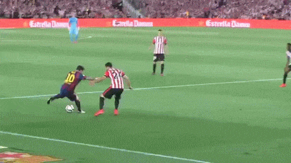
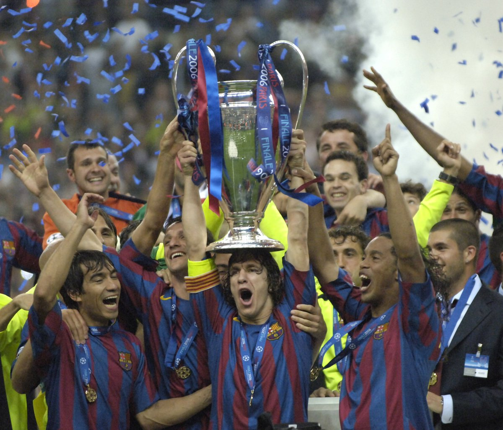
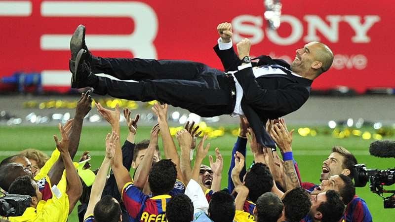

זה היה משחק בלתי נשכח ורווי באינספור אירועים. ריאל פתחה היטב וכבשה שער יתרון אבל בארסה הגיבה עם שלושה משלה. סרחיו ראמוס עוד הותיר תקווה בליבותיהם של אוהדי ריאל אך הנרי, מסי ופיקה סגרו את הסיפורז.
בארסה התקרבה מאוד לזכיה באליפות וגם הגיעה ל-100 שערי ליגה העונה אבל בעיקר השפילה את יריבתה הגדולה ביותר ועוד במגרשה של ריאל. הניצחון המדהים הזה יוצא דופן במיוחד לאור העובדה שהוא קטע רצף של 19 משחקים ללא הפסד של ריאל בהם היא ניצחה ב-18.
ליאונל מסי הוא השחקן הטוב כיום בעולם אבל למרות שכבש צמד הוא ניגן רק כינור שלישי או רביעי כשהכוכבים הגדולים של המשחק היו תיירי הנרי, שכבש צמד, וצ'אבי, שבישל לא פחות מארבעה שערים.
תקציר המשחק
3-1

ברצלונה זכתה בגביע עם צמד נפלא למסי.
בארסה המשיכה את העונה הנהדרת שלה עם ניצחון 1:3 בגמר על אתלטיק בילבאו. הארגנטינאי ניצח על החגיגה עם שני שערים (20, 74),
כולל מבצע אישי בלתי נשכח. ניימאר (36) הוסיף. איניאקי (80) רק צימק. צ'אבי ערך את הופעתו האחרונה בקאמפ נואו כשעלה כמחליף במקום אינייסטה שנפצע
תקציר המשחק
2-1

המשחק נערך בין קבוצת ברצלונה הספרדית לבין ארסנל האנגלית, ונגמר בתוצאה 2:1 לברצלונה. הבקיעו סמואל אטו וז'וליאנו בלטי מקבוצת ברצלונה, וסול קמפבל מקבוצת ארסנל. כמו כן, שוער ארסנל ינס להמן הורחק כבר במחצית הראשונה.
תקציר המשחק
3-1

לאחר פתיחה מהוססת מעט, השתלטו שחקני בארסה על המגרש ובדקה ה-27 עלו ליתרון לאחר שפדרו ניצל בישול ענק של צ'אבי וכבש בקלות מול ואן-דר סאר. לאחר שבע דקות קבע וויין רוני שוויון. מסירות כפולות של החלוץ האנגלי הסתיימו בדאבל-פס עם גיגס, שהיה בנבדל, ורוני לא טעה מול ואלדס.
במחצית השניה כבר ראינו רק קבוצה אחת על המגרש. מסי (54) כבש את השני של הקטאלונים בבעיטה מחוץ לרחבה לאחר טעות של השוער ההולנדי, ורבע שעה לאחר מכן היה זה דויד וייה שכבש בבעיטה מדוייקת לפינה הגבוהה כדי לקבוע 1:3, תוצאה שנשמרה עד לסיום.